代码中存在的循环依赖问题跟代码的维护工作有很大关系，也是日常开发中经常会碰到的一个问题。
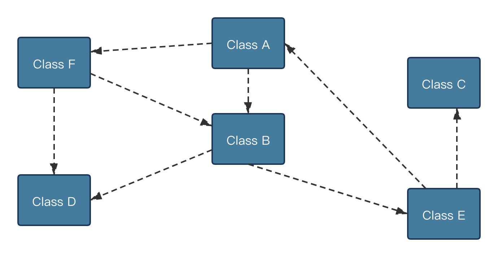
任何系统在开发了一段时间之后随着业务功能和代码数量的不断增加，代码之间的调用与被调用关系也会变得越来越复杂，各个类和组件之间就会存在出乎开发人员想象的复杂关系。
一种常见的复杂关系为类与类之间的循环依赖关系。
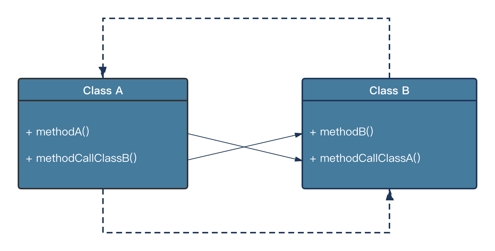
所谓循环依赖，简单来说就是一个类A会引用类B中的方法，而反过来类B也会引用类A中的方法，这就导致两者之间有了一种相互引用的关系，从而形成循环依赖。
合理的系统架构以及持续的重构优化工作能够减轻这种复杂关系，但是如果有效识别系统中存在的循环依赖，仍然是开发人员面临的一个很大的挑战。主要原因在于类之间的循环依赖存在传递性。
举个例子：如果系统中只存在类A和类B，那么他们之间的依赖关系就非常容易识别。
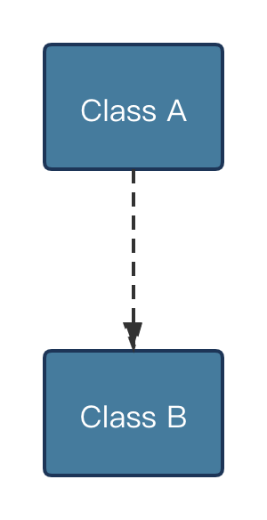
如果再来一个类C，那么这三个类之间的组合就有很多种情况了。
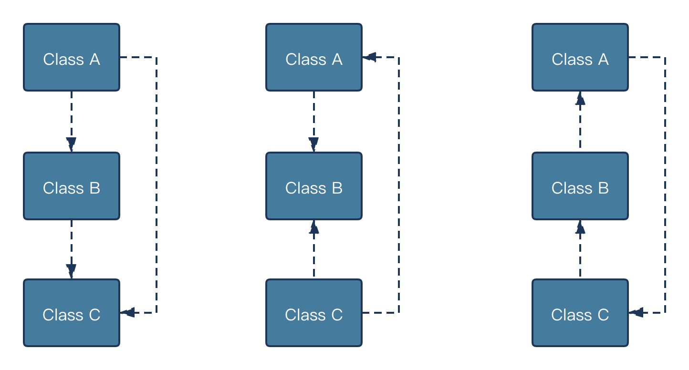
如果一个系统中存在几十个类，那么他们之间的依赖关系就很难通过简单的关系图进行逐一列举。一般的系统中类的数量显然不止几十个。更宽泛地讲，类之间的这种循环依赖关系也可以扩展到组件级别。产生组件之间的循环依赖的原因在于：组件1中的类A与组件2中的类B之间存在循环依赖，从而导致组件与组件之间产生了循环依赖关系。
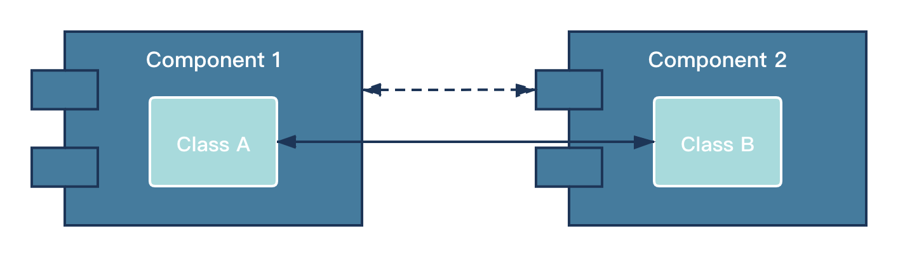
在软件设计领域有一条公认的设计原则：无环依赖原则。
无环依赖原则：在组件之间不应该存在循环依赖关系。通过将系统划分为不同的可发布组件，对某一个组件的修改所产生的影响，可以不扩展到其他组件。
所谓的无环依赖指的是在包的依赖关系中不允许存在环，也就是说包之间的依赖关系必须是一个直接的无环图。
下面我们通过一个具体的代码示例，介绍一下组件之间循环依赖的产生过程。也是在为本文要介绍的如何消除循环依赖做好准备工作。
现在我们正在开发一款健康管理类APP，每个用户都有一份自己的健康档案，档案中记录着用户当前的健康等级，以及一系列可以让用户更加健康的任务列表（如：忌烟酒、慢跑）。用户当前的等级是和用户所需要完成的任务列表挂钩的，任务列表越多，说明越不健康，对应的健康等级也就越低（最低为1、最高为3）。
用户可以通过完成APP所指定的任务来获取一定的积分，这个积分的计算过程取决于这个用户当前的健康等级。也就是说不同的等级之下同一个任务所产生的积分也是不一样的。而每个任务也有自己的初始积分，每个任务最终所能得到的积分算法为 12 / <当前的等级> + <任务初始积分>，健康等级越低，做任务所能得到的积分也就越高，这样可以鼓励用户多做任务。
背景就介绍到这里，对于这个常见我们可以抽象出两个类：一个是代表档案的 HealthRecord 类、另一个是代表健康任务的 HealthTask 类。
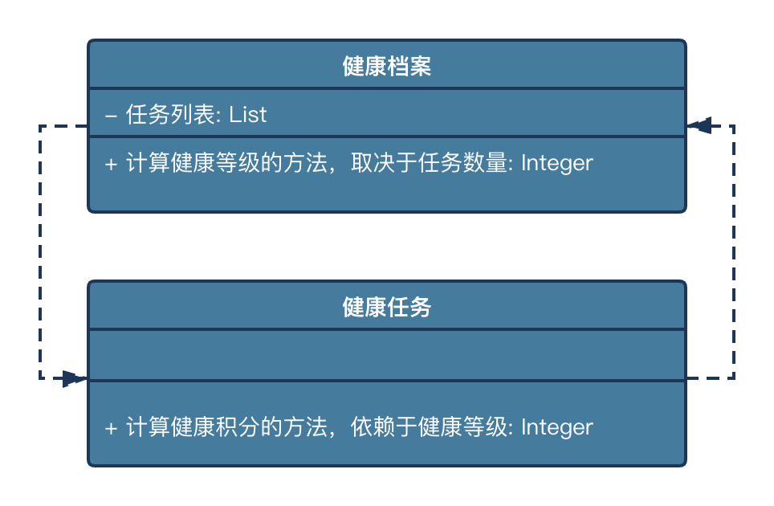
其中 HealthRecord 类中提供了一个获取健康等级的方法 getHealthLevel() 来计算健康等级，同时也提供了添加任务的方法 addTask()。
1 | public class HealthRecord { |
对应的 HealthTask 中，显然应该包含对 HealthRecord 的引用，同时也实现了计算任务积分的方法 calculateHealthPointForTask()，calculateHealthPointForTask() 方法中用到了 HealthRecord 中的健康等级信息 getHealthLevel()。
1 | public class HealthTask { |
不难看出，HealthRecord 和 HealthTask 之间存在明显的相互依赖关系。
我们可以使用 IDEA 自带的 Analyze Dependency Matrix 对包含 HealthRecord 和 HealthTask 类的包进行分析，得出系统中存在循环依赖代码的提示。
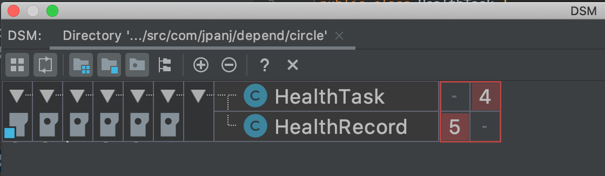
Analyze Dependency Matrix 的使用细节可以参考官方文档：https://www.jetbrains.com/help/idea/dsm-analysis.html，这里我们只关心是否存在循环依赖，也就是那个红色的框框。
通过上边的例子，我们了解了如何有效识别代码中存在循环依赖的问题，下边再来看看如何消除代码中的循环依赖。
软件行业有一句非常经典的话：「当我们在碰到一个问题无从下手时，不妨考虑一下是否可以通过加一层的方法来解决」。消除循环依赖的基本思路也是一样的，有三种常见的方法：提取中介者、转移业务逻辑、采用回调接口。
提取中介者
提取中介者方法也被称为关系上移，其核心思想就是把两个相互依赖的组件中的交互部分抽象出来形成一个新的组件，而这个新的组件包含着原有两个组件的引用，这样就把循环依赖关系剥离出来，并提取到一个专门的中介者的组件中。
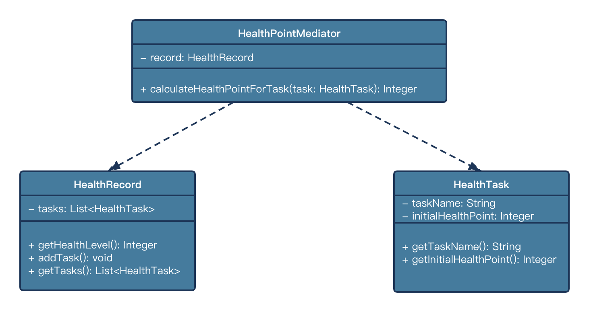
这个中介者组件的实现也不难，可以通过提供一个计算积分的方法对循环依赖进行剥离，这个方法同时依赖 HealthRecord 和 HealthTask 对象，并实现了原有 HealthTask 中根据 HealthRecord 的健康等级信息计算积分的业务逻辑。
1 | public class HealthPointMediator { |
可以看到上边的 calculateHealthPointForTask() 方法中，我们从 HealthRecord 中获取了等级，然后再从传入的 HealthTask 中获取初始积分，从而完成了对整个积分的计算过程，这个时候的HealthTask 就变得非常简单了，因为已经不包含任何有关 HealthRecord 的依赖。
1 | public class HealthTask { |
下边针对「提取中介者」这种消除循环依赖的实现方法来编写一个测试用例：
1 | public class HealthPointTest { |
在 HealthRecord 中我们创建了 5 个 HealthTask，并赋予了不同的初始积分。然后通过 HealthPointMediator 这个中间者分别对每个 Task 进行积分计算。最后我们再次使用 Analyze Dependency Matrix 分析下当前的代码是否有循环依赖。
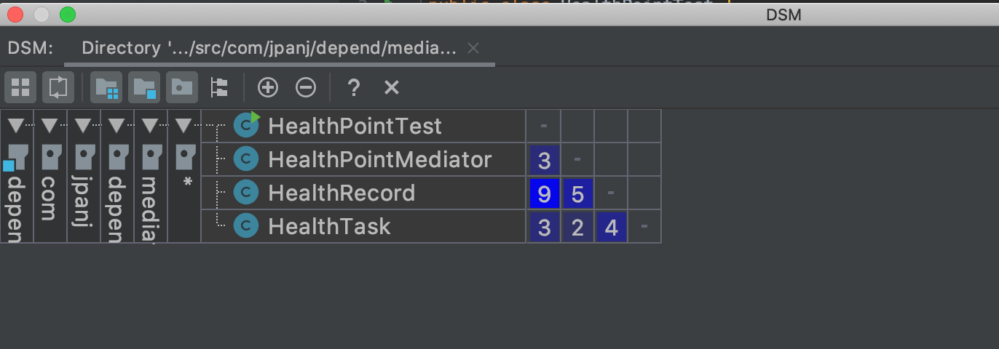
可以发现这次代码中已经不存在任何的环了。
转移业务逻辑
转移业务逻辑也被称为关系下移，其实现思路在于提取一个专门的业务组件 HealthLevelHandler 来完成对健康等级的计算过程，HealthTask 原有的对 HealthRecord 的依赖，就转移到了对 HealthLevelHandler 的依赖，而 HealthLevelHandler 本身是不需要依赖任何业务对象的。
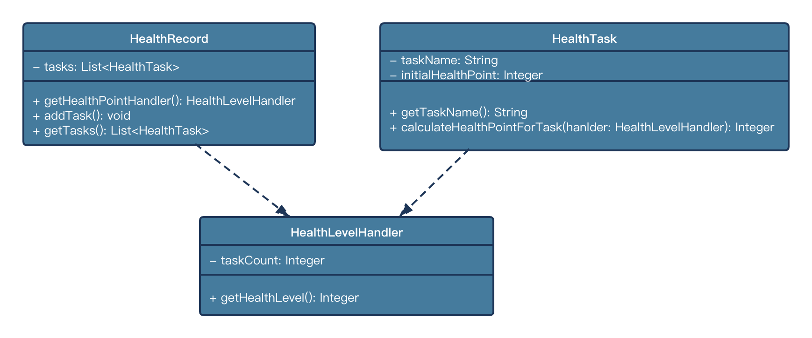
1 | public class HealthLevelHandler { |
HealthLevelHandler 的实现也不难，包含了对等级的计算过程，具体到这里就是实现 getHealthLevel() 方法，随着业务组件的提取，HealthRecord 需要做相应的改造，getHealthPointHandler 就封装了对 HealthLevelHandler 的创建过程：
1 | public class HealthRecord { |
对应的 HealthTask 也需要进行改造：
1 | public class HealthTask { |
在 calculateHealthPointForTask() 方法中，传入一个 HealthLevelHandler 来获取等级，然后根据获取的等级计算最终的积分。
最后我们对测试类进行改造：
1 | public class HealthPointTest { |
现在 HealthTask 和 HealthRecord 都已经只剩下对 HealthLevelHandler 的依赖了。
采用回调接口
所谓的回调本质上就是一种双向的调用关系，也就是说被调用方在调用别人的同时也会被别人所调用。
我们可以提取一个用于计算健康等级的业务接口（HealthLevelHandler），然后让 HealthRecord 去实现这个接口，HealthTask 在计算积分的时候只需要依赖这个业务接口而不需要关心这个接口的具体实现类。
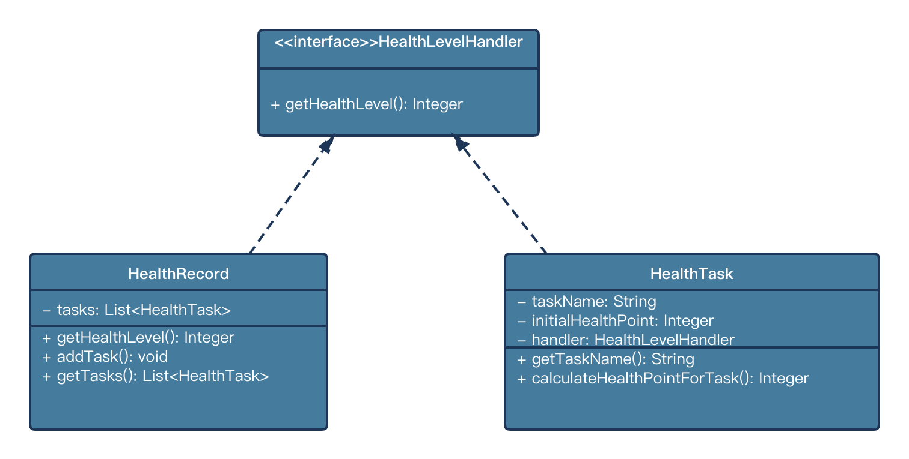
我们同样将这个接口命名为 HealthLevelHandler，包含一个计算健康等级的方法定义。
1 | public interface HealthLevelHandler { |
有了这个接口，HealthTask 就再不存在对 HealthRecord 的依赖，而是在构造函数中注入 Handler 接口：
1 | public class HealthTask { |
在这里的 calculateHealthPointForTask() 方法中，我们也只会使用 Handler 接口所提供的方法来获取所需的健康等级，并计算积分。
现在的 HealthRecord 需要实现 HealLevelHandler 接口，并提供计算健康等级的具体业务逻辑：
1 | public class HealthRecord implements HealthLevelHandler { |
在 addTask() 方法中，当创建 HealthTask 时，HealthRecord 需要把自己作为一个参数传入到 HealthTask 的构造函数中，这样我们就通过回调方法完成了对系统的改造。
采用回调方法，测试用例的代码业务变得更加简洁：
1 | public class HealthPointTest { |
我们没有发现除了 HealthRecord 和 HealthTask 之外的任何第三方对象，同样也可以使用 Analyze Dependency Matrix 来验证当前系统中是否存在循环依赖关系。
最后我放一张整体分析结果，从上到下依次为：回调接口、不采用任何措施、提取中介者、转移业务逻辑。
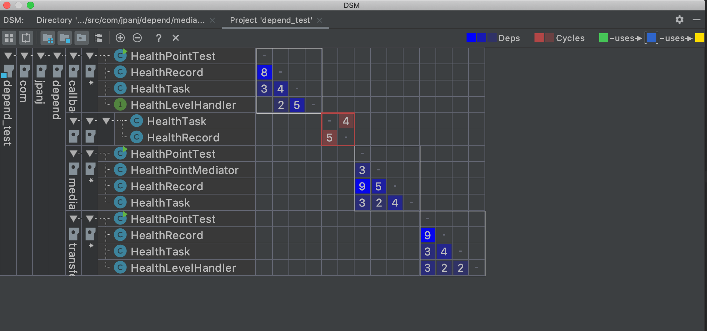
总结
对于处理循环依赖问题而言，难点在于当识别了系统中存在循环依赖场景时如何采用一种合适的方法对代码进行重构。在日常开发过程中，有三种常见的消除循环依赖的方法，可以根据场景进行灵活的应用。
一般而言回调方法是优先推荐的，因为它将依赖关系抽象成了接口：一来方便后续的扩展，二来从测试用例中也可以看出这种方式不需要改变系统的使用过程。
在无法改变现有类的内存结构时，也就是说无法为现有类添加新的接口实现关系时，可采取提取中介者和转移业务逻辑这两种实现方式。其中提取中介者的方法相对比较固定，结构上与设计模式的中介者模式也比较类似。而转移业务逻辑需要根据具体的场景进行分析，具有最大的灵活性。
本文中的示例代码见：https://github.com/Panmax/CircularDependenceExample